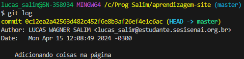

O versionamento de software pode ser descrito como um processo de controle de versões, o que é estabelecido por meio de códigos. Isso permite muito mais visibilidade aos programadores, que conseguem verificar quais foram as mudanças realizadas entre uma versão e outra
